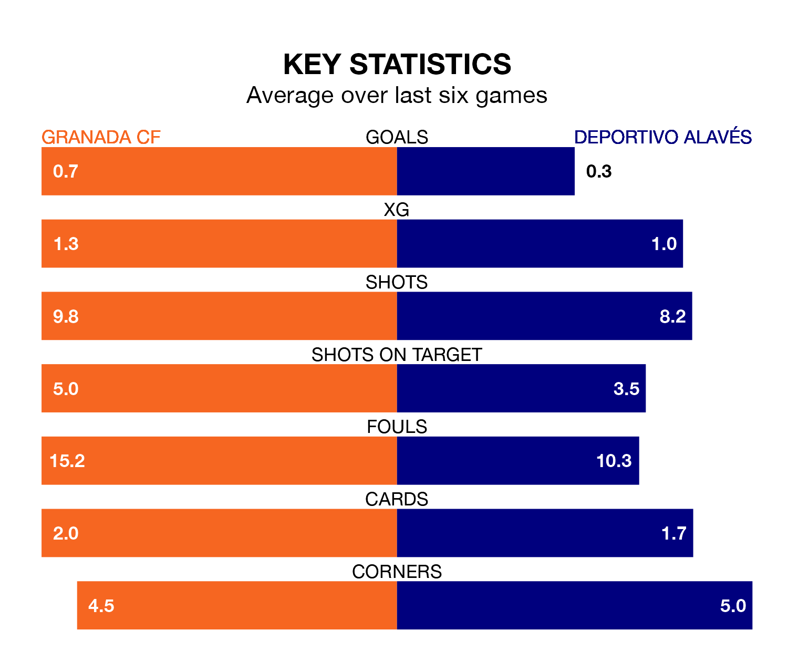

Granada CF welcome Deportivo Alavés to the Estadio Nuevo Los Cármenes on Sunday looking to pick up points to end their five-game losing streak.
Granada's struggles have left them with just one point from their last six La Liga matches, while their opponents have earned five from a possible 18.
Granada are 19th in the table after 30 games, of which they have won two and drawn eight, earning 14 points.
Alavés are six places ahead of the hosts in 13th, with eight wins and eight draws putting them on 32 points.
In the last 10 years, Granada and Alavés have played each other on 11 occasions. Granada won seven of them, Alavés three, and they drew once.
On average, Granada scored 2.0 goals and Alavés 1.5 in those matches.
Their last meeting was on November 24, when Alavés won 3-1 at home.
With 26 goals in 30 games so far this season, Depor are scoring at below the league average rate with 0.9 goals per game. But they are conceding fewer than average too, letting in 36 goals at a rate of 1.2 per game.
Granada are also below average scorers, with 1.0 goal per game, compared to a league average of 1.3. They have conceded 2.0 goals per game.
Granada's last match was on April 4, a 1-0 loss against Valencia CF.
Alavés lost 1-0 against Real Sociedad last time out, on March 31.
Sunday's match will be refereed by Víctor García Verdura, who has taken charge of 14 La Liga games so far this season, issuing four red cards and booking 60 players. He has awarded six penalties.
The last Granada game García Verdura refereed was a 2-0 away loss to Getafe CF on January 29. His last Alavés match was their 1-1 draw at home against RCD Mallorca on February 24.
Updated: 10:01 (UTC), 12/04/24